대잠전 전문가 테일러 스위프트를 격침하라!
게시: 2023-09-28T06:30:11+09:00
최근 SNS에 이상한 무늬의 의상을 테일러 스위프트의 사진에 밀덕임이 분명한 어떤 사람의 comment가 올라옴.
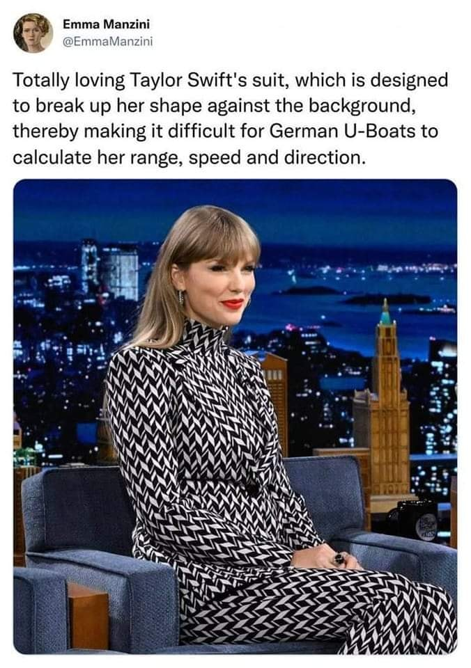
(번역 : 테일러 스위프트의 의상 완전 좋아! 저 의상은 배경에 비친 그녀의 몸매를 알아볼 수 없게 만들어서 독일군 U-boat들이 그녀의 거리, 속도, 진행 방향을 계산하는데 애를 먹게 만들거든!) WW2 당시, 그리고 상당 부분은 현대전에서도, 잠수함에서 수상함으로 어뢰를 쏘는 것은 매우 살 떨리는 순간. 자동화기 쏘는 것도 아니고 딱 한 번에 2~4발을 한꺼번에 쏘는 것이니 무조건 one shot one kill을 해야 함. 잠수함이 노릴 만한 대형 군함은 홀로 다니는 경우가 많지 않으니, 내가 쏜 것이 명중하든 명중하지 않든 곧 그 호위함들이 달려들어 나에게 폭뢰를 마구 투하할 것이 뻔하기 때문. 그러니까 기본적으로 잠수함은 적 장군을 노리고 1주일간 매복했다가 딱 1방에 저격해야 하는 저격수 입장임. 그런 소중한 기회가 왔는데 대충 눈짐작으로 어뢰를 쏠 수는 없음. 그래서 어뢰를 쏘기 전에는 반드시 firing solution을 계산을 통해 얻고 그에 맞춰 쏘아야 함 (그림1).
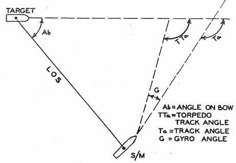
그런데 firing solution 계산에는 적함의 거리, 방향, 속도 등이 필요. 그걸 대체 어떻게 얻나? 흔히 영화에 나오는 것과는 달리, 저럴 때 잠수함은 절대 active sonar, 즉 ping을 쏘지 않음. Ping을 쏘면 적함과의 거리야 쉽게 알 수 있겠지만 쏘는 순간 자신의 존재를 적함에게 메가폰으로 알리는 꼴. 그래서 요즘 잠수함들은 passive sonar를 잠수함 이물은 물론 sail과 측면 등에 잔뜩 array로 배열해놓고 그 일련의 passive sonar들에게 적함의 소음이 도착하는 시간 차이을 이용하여 적함의 위치를 파악. 당연히 현대적인 컴퓨터가 있어야 계산이 가능.
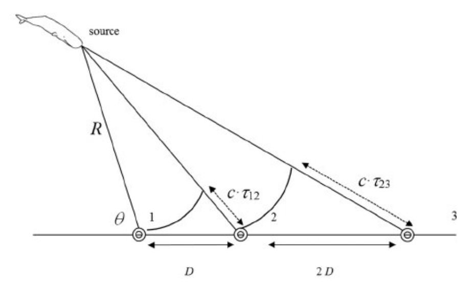
(현대적인 passve sonar array는 저렇게 원호 1~2와 2~3 사이에 도착하는 음향의 시간 차이(time difference of arrival, TDOA)를 이용하여 적함의 위치를 파악한다고. 그래서 sonar array의 간격이 길면 길 수록 정확도 측면에서 더 유리하고, 그래서 잠수함 전면 뿐만 아니라 긴 측면에 배열해놓은 flank sonar array가 중요하다고.)
그런데 WW2 당시에는 그런 컴퓨터가 없으니, 오로지 잠망경으로 얻은 정보만으로 적함의 거리, 방향, 속도를 알아내야 함. 근데 상당 부분이 사전 정보 + 대충 짐작이 결합된 것. 즉, 먼저 눈에 보이는 적함이 HMS Nelson인지 HMS Hood인지를 구분할 줄 알아야 하고, 적군의 다양한 함종의 대략적인 길이와 높이 등의 정보를 알고 있어야 함.
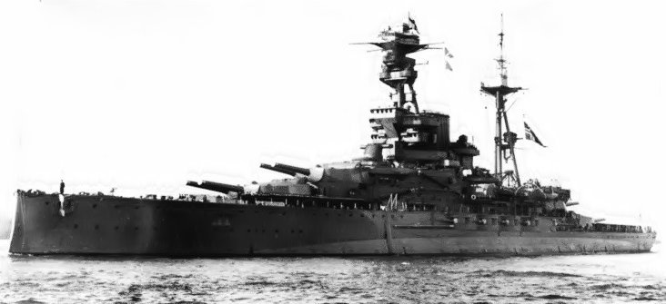 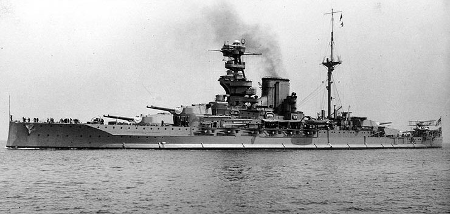
(위는 Revenge-class 전함인 HMS Royal Oak (3만1천톤, 길이 189.2m), 아래는 Queen Elizabeth-class 전함인 HMS Valiant (3만3천톤, 길이 195m). 어차피 몇 m 차이가 나지 않으니 대충 전함이면 180~190m 정도라고 생각하면 되지만 최소한 작은 실루엣을 보고 저게 전함인지 순양함인지는 구별해야 함.)
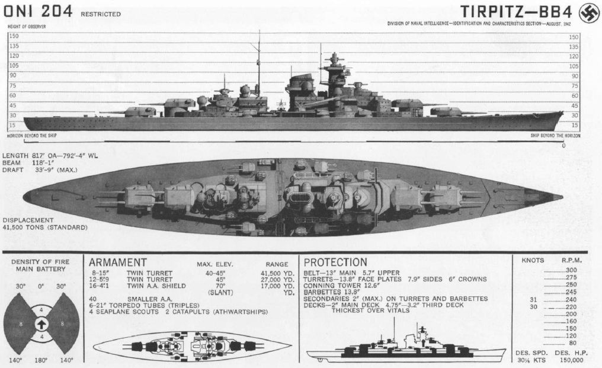
(이 그림은 독일 전함 Tirpitz의 제원. 해면에서 함교 꼭대기까지의 높이는 대략 120피트(36.5m), 뒷마스트 높이는 150피트(45.7m).) 1) 거리 : 잠망경에는 간단한 거리측정기(stadimeter)가 달려 있는데, 전함이나 순양함에 달린 거리측정기(rangefinder)와는 달리, 여기에는 적함의 해면에서 마스트까지의 높이를 입력해야 함. 수면 위 높이가 원래 35m인데 지금 잠망경에 보이는 눈금 높이가 1.7cm라면 삼각함수로 그 거리를 잴 수 있음. 물론 그 숨막히는 와중에 종이와 연필로 그거 계산하고 있기는 좀 뭣하니까 아래 그림에 보이는 것처럼 함. 즉, 적함은 하나지만 위아래로 2개의 이미지가 보이는데 위 이미지의 흘수선을 아래 이미지의 마스트 꼭대기에 일치시키도록 다이얼을 돌림. 그게 일치하는 순간 눈금을 읽으면 적함과의 거리가 자동 계산되어 나옴. 일종의 아날로그 컴퓨터.
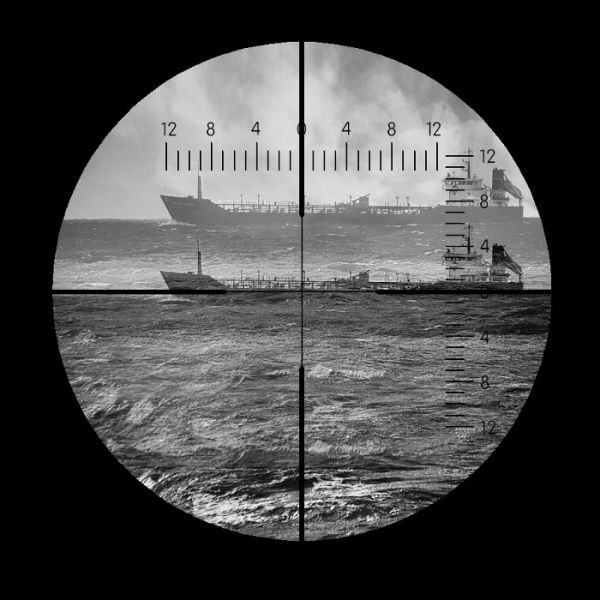
(Stadimeter가 설치된 잠망경에 위아래로 겹쳐 보이는 이미지. 아래 이미지의 마스트의 높이가 윗 이미지의 흘수선과 딱 마주칠 때까지 다이얼을 돌리면 잠망경에 부착된 stadimeter 다이얼 눈금에서 목표함까지의 거리가 자동 계산됨.)
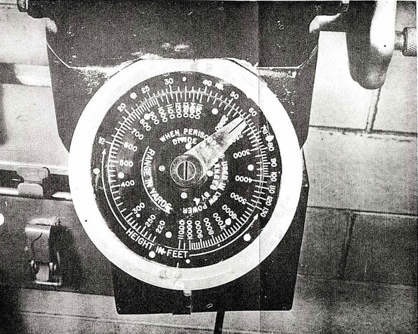
(미해군 Gato 및 Balao급 잠수함에 설치된 stadimeter의 자동 거리계산 다이얼.) 2) 방향 : 적함의 길이를 미리 알고 있어야 함. 이제 적함과의 거리를 아는 상황에서, 눈에 보이는 길이 170m짜리 적함이 내 시선과 직각이라면 정확하게 그 길이가 170m로 보일 것임. 그러나 그 길이가 128m로 보인다면 내 시선과 직각을 향한 것이 아니라 어느 정도 비스듬하게 꺾인 것임. 역시 삼각함수로 계산이 가능 (아래 그림).
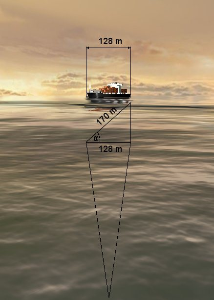
3) 속도 : 이게 제일 대충인데, 일단 적함 함수에 일어나는 파도를 보고 눈 대중으로 짐작해야 함. 군함마다 이물 형상에 따라 bow wave가 크게 일어나는 것이 있고 작게 일어나는 것이 있는데, 역시 각 군함의 평소 모습과 속도를 대충 알고 있어야 짐작할 수 있는 거임. 그리고 거리와 방향을 안 뒤에 초시계를 들고 적함의 위치를 해도에 표시해가며 계속 추적하면서 진짜 속도가 얼마인지 계산해야 함.
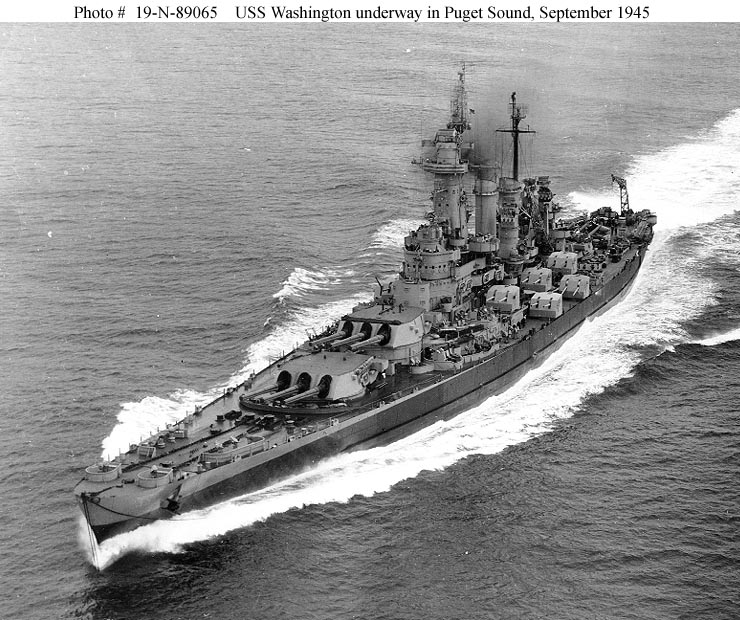
(North Carolina-class 전함인 USS Washinton (BB-56, 4만5천톤, 28노트), 상대적으로 bow wave가 큼)
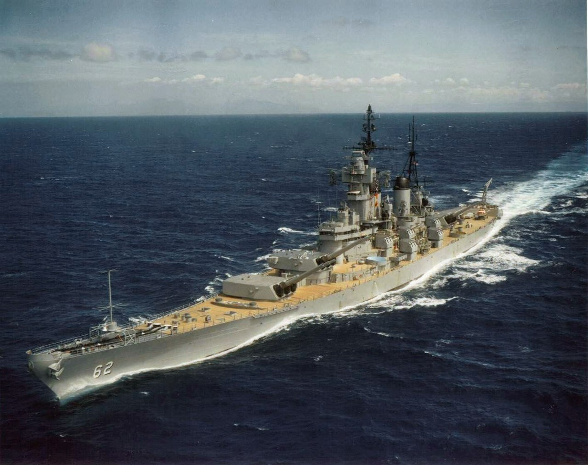
(Iowa-class 전함인 USS New Jersey(BB-62, 6만톤, 33노트). 노스캐롤라이나급 전함에 비해 길고 얇은 함수 모양 덕분에 더 빠르면서도 bow wave가 상대적으로 더 잔잔함.) 그런데 보셨다시피 1,2,3 모두가 다 대충임. 군함이라는 것이 연료량과 탄약량 등에 따라 수면 위 높이가 약간 왔다갔다 하는 것이 정상이고, 구름과 안개로 희미한 바다와 하늘을 배경으로 3km 밖에 있는 적함이 HMS Hood인지 HMS Valiant인지, 심지어 지금 이쪽으로 오는 것인지 반대쪽으로 가는 것인지 구별하기가 쉽지 않음. 특히 테일러 스위프트처럼 잠수함에게 나의 형상과 방향을 알려주지 않겠다는 결연한 의지로 'Dazzle camouflage'(아래 사진)를 입은 경우는 정말 어려움.
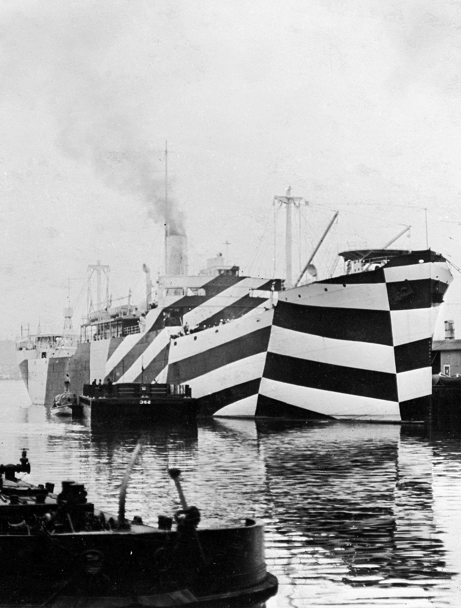
(이건 WW2가 아니라 WW1 당시인 1918년 화물선인 SS West Mahomet에 대즐 위장무늬를 그려넣은 모습.)
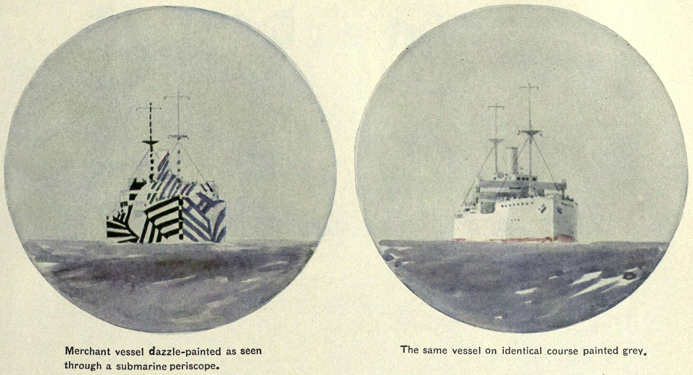
(같은 선박에 대즐 위장무늬를 그려넣은 모습과 평범한 페인트를 칠한 모습.) 게다가 대부분의 군함은 잠수함에게 쉽게 firing solution을 내주지 않기 위해 10분에서 20분마다 1번씩 속력과 방향을 계속 바꾸면서 지그재그로 항해. 다양한 수송선 수십 척을 밀집 대형으로 이끌고 가는 함대가, 무선통신이 금지된 상황에서 일제히 10분에서 20분마다 항로와 속도를 바꾸는 것이 과연 쉬웠을까? 괜히 그 GR을 하다가 서로 충돌하는 위험이 더 크지 않았을까? 그를 위해서 특수 장비까지 만들었음. 거기에 대해서는 아래 link 참조. https://nasica1.tistory.com/508 ** 레이더 개발 이야기는 다음 주에 이어집니다.
Source : http://www.tvre.org/en/acquiring-torpedo-firing-data https://en.wikipedia.org/wiki/Dazzle_camouflage https://en.wikipedia.org/wiki/HMS_Royal_Oak_%2808%29 https://en.wikipedia.org/wiki/USS_Washington_(BB-56) https://en.wikipedia.org/wiki/HMS_Valiant_%281914%29 https://en.wikipedia.org/wiki/USS_New_Jersey_(BB-62)